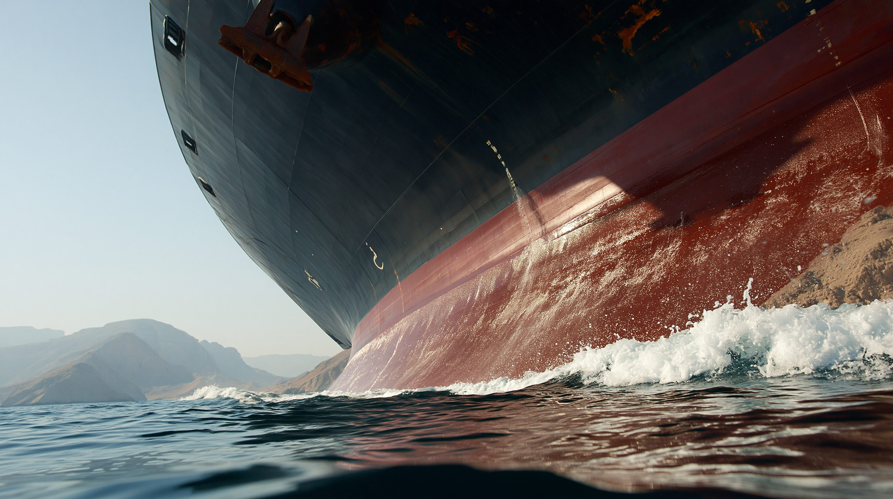
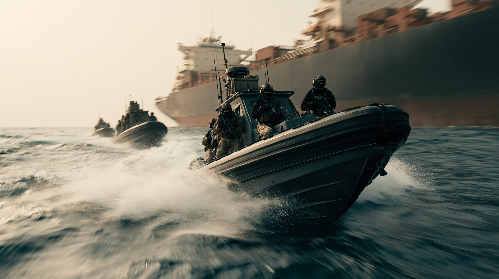
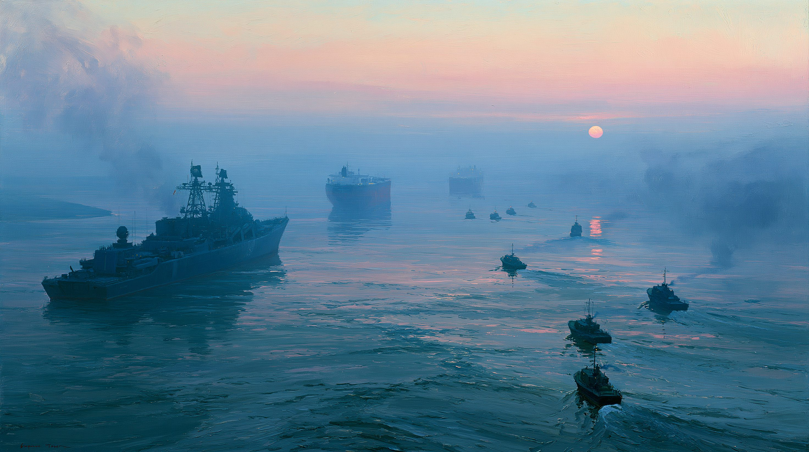
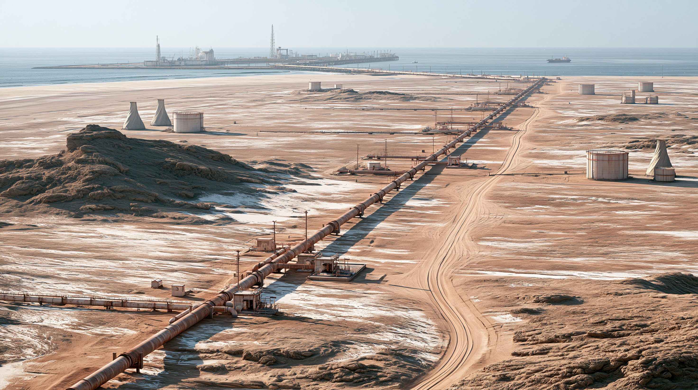

01核心と問い — 「石油」ではなく「急所」
用語と時点について。本稿でいう「封鎖」は、機雷の敷設・革命防衛隊〈IRGC〉による臨検や攻撃・通航許可の選別など複数の手段の総称であり、物理的に水路を塞ぐ単一の行為を指すわけではない。また情勢は流動的なため、本記事は2026年6月26日時点のスナップショットとして読まれたい。
ホルムズ海峡はペルシャ湾とオマーン湾を結ぶ唯一の出口で、最も狭い場所は幅約33キロ、実際の航路はさらに細い。ここを2025年には日量約1,500万バレルの原油——海上で取引される原油の約3割——が通った。サウジアラビア、アラブ首長国連邦、クウェート、イラク、カタール、そしてイラン自身の輸出が、この一点に集中する。代替路はサウジの東西パイプラインとUAEのハブシャン-フジャイラ管しかなく、迂回できる量は封鎖される量の数分の一にとどまる。だからこそ海峡は、軍事的に占領せずとも世界経済を揺らせる、希少な“急所”になる。

02タイムライン — 封鎖から再封鎖まで
繰り返し露呈してきた「脆さ」
1980年代のイラン・イラク戦争では、互いのタンカーを攻撃し合う「タンカー戦争」が起きた。2019年には安倍晋三首相（当時）の訪問中にホルムズ付近でタンカーが攻撃され、海峡の脆さは時代を越えて何度も露呈してきた。
攻撃と報復の開始
米国とイスラエルがイランを攻撃し、最高指導者ハーメネイーを殺害。イランは即座にミサイル・ドローンで報復し、ホルムズ海峡の海上輸送は混乱に陥った。世界の石油・ガスの約2割が通る水路が、一夜にして危機の中心となった。
「閉鎖」宣言と価格急騰
3月4日、イランはホルムズ海峡の「閉鎖」を正式に宣言し、通航する船を攻撃すると警告した。商船への攻撃が相次ぎ、通航は当初およそ7割減、150隻超が海峡の外で投錨し、やがてほぼゼロに。ブレント原油は4年ぶりに1バレル100ドルを突破し、ピークでは126ドルに達した。
アメリカの“逆封鎖”
トランプ政権は4月13日、イランの港に出入りする船を対象に、米海軍による“逆封鎖”を発動した。5月には封鎖を破ろうとしたイランのタンカーを空母艦載機が攻撃し、航行不能にした。封鎖と封鎖がぶつかり合う異例の事態となった。
停戦、そして再封鎖
6月17日、米・イラン両首脳が停戦の覚書〈MOU〉に署名。海峡は60日間にわたり無料で再開され、米国の封鎖も解除された。だが6月22日、イスラエルのレバノン攻撃を理由にイランが再び封鎖を宣言。通航は前日の35隻から12隻へ激減し、危機は今も収束していない。

035つの視点
| 立場 | 最も重視するもの | 求める結果 | 最大の弱み |
|---|---|---|---|
| イラン | 圧力をかけるてこ | 攻撃の停止と制裁緩和 | 封鎖は自国の輸出も止める |
| 湾岸産油国 | 自国の輸出と経済 | 海峡の安定と迂回路の確保 | 迂回の余力が封鎖量に届かない |
| アメリカ・有志連合 | 航行の自由 | 力と外交による再開 | 力ずくの再開は高くつく |
| 日本・アジア輸入国 | 安定調達 | 早期の海峡再開 | 中東・海峡への依存が極端 |
| 中国 | エネルギー安保とイラン関係 | 封鎖の早期解除 | 二重に依存し損失が大きい |

04データ・統計
ブレント原油価格の推移（2026年・ドル/バレル）
概数。2月末の封鎖後、3月に4年ぶり100ドル超、ピークで126ドル。6月の停戦合意で一旦沈静化。出典：各種報道を基に整理
ホルムズ通過量 vs 迂回パイプラインの余力（日量・百万バレル）
概数。海峡を通る原油は迂回路の能力をはるかに上回り、代替路は封鎖の穴を埋めきれない。出典：IEA、EIA、CNBC
注目の数字
海峡を避ける選択肢と、その限界
| 経路 | 能力（概数） | 限界 |
|---|---|---|
| サウジ 東西パイプライン（紅海・ヤンブー） | 日量約500万バレル | 平時も一部使用、全量は回せない |
| UAE ハブシャン-フジャイラ（ADCOP） | 名目 日量約180万バレル | 空き容量は約70万バレルのみ |
| 喜望峰まわりの迂回航路 | 量の制限なし | 約2〜3週間の遅延とコスト増 |
| 国内・国際備蓄の取り崩し | 各国 数カ月分 | あくまで一時しのぎ |
出典：IEA、EIA、CNBC を基に整理
05深掘り — 諸刃の剣・脱ホルムズ・日本の宿題
